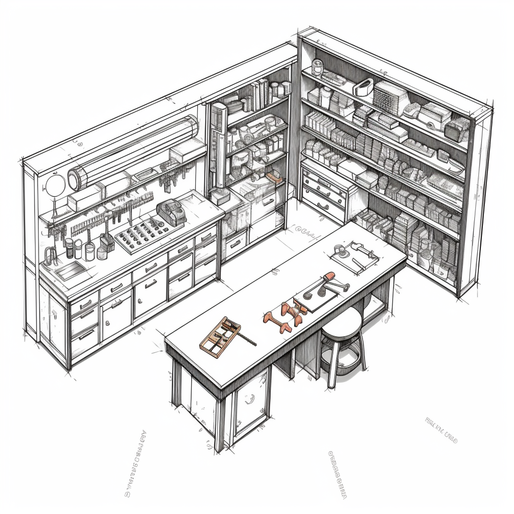

2 The R Workshop

2.1 The Big Picture
In previous chapters, we learned what R is and why we would want to use it. We setup access to R though our web browser by signing up for a free RStudio account. Let’s move ahead to learning about R packages. R packages instantly give you access to a universe of tools and datasets.
2.2 Introduction
The medicaldata package is a collection of datasets that are relevant to medical research. It offers a robust collection of medical datasets extracted from a wide range of study designs, including randomized controlled trials, retrospective and prospective cohort studies, and case-control studies. These datasets encompass a diverse array of medical conditions and treatment approaches, providing rich opportunities for learning, exploration, and analysis.
The package contains over 19 datasets, covering a wide range of medical topics, including cancer, cardiovascular disease, diabetes, and mental health. One of the datasets, ‘strep_tb’, for example, is drawn from the groundbreaking 1948 trial of Streptomycin treatment for tuberculosis, the first modern randomized, placebo-controlled clinical trial. The datasets in the medicaldata package are all in a standard format, which makes them easy to use with R.
2.3 R Packages
How do we get access to all of these interesting datasets?
The beauty of R lies in its simplicity and ease of access to a wealth of data and tools. Unlike traditional methods where you might have to navigate to a website, download files, and manually place them into specific directories, R simplifies this process immensely. One of the big advantages of R is that it provides the capability to access numerous tools and datasets directly from the command line using a single line of code.
2.4 Packages are Toolboxes
Think of R as large workshop with access to a main tool depot. with access to lots of specialized toolkits. In this workshop you are assigned a personal workbench. The toolboxes are designed and put together by different craftsmen, making them unique in the tools they contain. If you’ve identified a toolbox that you need for a specific project, you first have to bring that toolbox into your workbench. In fact, it would not be unusual to retrieve several toolkits depending on needs of your project.
However, just lugging the toolboxes to your workbench doesn’t necessarily mean you can immediately use the tools they contains. If you want access to all your screwdrivers at once, you will need open a specialized screwdriver toolkit. On the other hand, you might only want a single screwdriver from a special toolkit. this is more than just keeping your workbench tidy, you also don’t want to have duplicates of similar tools around which may lead to confusion.
2.5 Breaking down the workshop analogy
Let’s connect this analogy with learning R
The workshop represents R and RStudio
The personal workbench is your R project
The toolboxes are R packages
The tool depot is the Comprehensive R Archive Network (CRAN) package repository (more on this later!)
Lugging the toolkit to your workbench is analogous to installing the package
Opening the entire toolkit is adding it to your active R libraries
Selecting a single tool from a toolkit is the same as using the
::operator on a package.
2.6 Software repositories in R
2.6.1 CRAN (https://cran.r-project.org/)
The CRAN repository where officially approved and tested packages are stored.These packages are well-documented, reliable, and updated regularly. So, if you need a tool for a common task, you’re likely to find a toolbox containing it in the CRAN repository.
2.6.2 Development repositories
Places like Github and other code repositories offer exciting, cutting-edge tools that may not have made their way to the main CRAN depot yet. While the tools from these workshops can be highly useful, they also come with a word of caution as they may not be as thoroughly tested and documented as those in the CRAN depot. You may also you need to use the latest advancements with well-known packages that have not been updated on CRAN yet.
2.7 Walkthrough
Let’s walk through loading the medicaldata package which will provide the datasets we will use thoughout the rest of book.
2.7.1 Setting the stage
- First create a new R project in R Cloud
-01.png)
Give your project a name by clicking above the menu bar. Type in RforDoctors.

Create a new empty R script

Save the File as chapter1.R

Type the following into your blank script:
# Install the R package medicaldata
install.packages("medicaldata")
# Load package into active library
library(medicaldata)- Access the
Codemenu and selectRun All

- Examine the output in the console window.

2.8 Reviewing the Code
Diving into the code we’ve written, several key points need to be highlighted.
Code isn’t like regular writing. Forget paragraphs; each command you write stands alone on its own line.
The pound symbol # leads us to the next key point. Placing this at the start of a line tells R to gloss over this part when executing code. This is what we call a comment and it’s a handy way to leave notes for yourself and others.
The third point concerns functions, such as
install.packages()andlibrary(). Consider functions as time-saving shortcuts for complicated operations. They take inputs and give outputs.When you see parentheses associated with a term, think function. Whatever goes inside these parentheses are known as input parameters to the function.
Look closely at the use of quotes around
medicaldatain theinstall.packagesline, but their absence in thelibraryline. In R, quotes aren’t just punctuation, they serve a specific function which we’ll delve deeper into later.
2.9 Examining the output
Our first interactive coding command produced some interesting output in the R console. Let’s take a moment to discuss the R console and understand what it just told us.
The R console is akin to a live conversation with R. When you type a command and hit enter, R listens, processes the request, and then speaks back to you. This “speech” is the output you see on your screen. Let’s look at the output from our script:

Now, back to the output of our first command, install.packages("medicaldata"). This command tells R to install the “medicaldata” package, a collection of ready-made functions and data. R takes this command, connects to a server, and starts to download the package. It provides us with live updates, telling us how large the package is (650 KB), and its download status.
The next few lines, * installing *binary* package ‘medicaldata’ ... and * DONE (medicaldata), tell us that R has successfully installed the package.
The last line of the output, ‘/tmp/Rtmpi7lTow/downloaded_packages’, is R’s way of saying “If you need the downloaded files, here’s where I’ve stored them”.
Once the installation is complete, we run library(medicaldata). This command tells R to open the toolbox of medicaldata and make its tools available for use. There’s no output after this command, which usually indicates that the command has run successfully and the package is ready to use.
2.10 Checking the results of our work
Installing packages is a fundamental aspect of using R. In the next few chapters we will learn more about the language of R to manipulate and process data, but for now let’s see the fruit of our labor.
Most R packages have excellent documentation. The medicaldata package is no exception. The guide to the datasets in the package can be found at this link: https://higgi13425.github.io/medicaldata/.
Let’s use the instructions from the package author to view the different datasets we now have installed by typing into the console:
data(package = "medicaldata")Once you execute this command, R will display an interactive window showing you all the datasets available in the “medicaldata” package. Each dataset is listed with a brief description of the kind of data it contains, which can be very useful when deciding which dataset to use for a particular analysis.

2.11 Entering data within a script versus the console
When you’re working with R, you have two main places where you can enter your data or commands: the script editor and the console.

The script editor is your workspace for crafting R scripts. This is where you write your lines of code, organize your thoughts, define functions, and generally create your R programs. Anything you write in the script editor is saved and can be run as many times as you want, making it ideal for larger, more complex analyses.
On the other hand, the console is the live interaction space where R executes commands and displays results. Anything you type directly into the console is run immediately, but it’s not saved once you close your R session. It’s a great place for quick calculations, testing small bits of code, or inspecting data.
In essence, the script editor is your drafting table where you design and plan, and the console is more like a chat where you can immediately execute and see your plans come to life. As you continue to work with R, you’ll become more comfortable determining when to use each for different tasks.
Indeed, certain commands are best suited for direct execution in the console, especially those that serve to inspect data or check a package’s contents. The command to view the datasets within the medicaldata package is a good example of this. It’s a ‘single-use’ operation that doesn’t necessarily form part of the core workflow in your script, but rather provides you with valuable contextual information.
2.12 Chapter Summary
In this chapter, we introduced the basics of using R, with a specific focus on accessing and utilizing packages from CRAN. We introduced the concept of functions, explained the role of comments, and highlighted the differences between writing code in a script versus executing commands in the console. Through the installation and exploration of the ‘medicaldata’ package, we demonstrated the ease and power of working with packages in R. This foundational knowledge will serve as a solid base as we delve deeper into R programming in subsequent chapters.